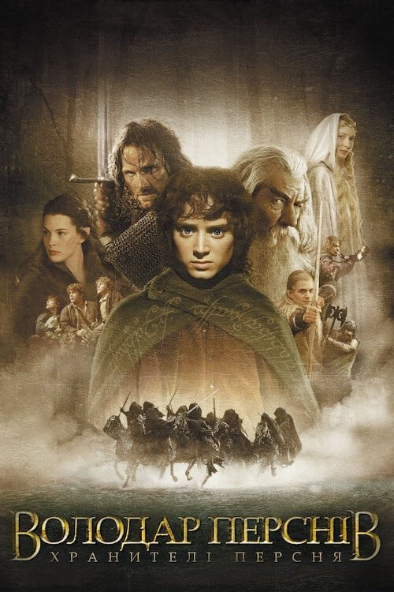

Володар перснів: Хранителі персня
Перша частина культової трилогії Пітера Джексона, знятою за однойменним романом Джона Роналда Руела Толкіна.
Сюжет докладно і барвисто повторює толкіенівську класику. Так, чарівник Гендальф-Сірий вмовляє свого друга-хоббіта Більбо, що втрачене тисячу років тому Кільце Всевладдя, яке той відшукав під час своїх мандрів, треба знищити. Ти більше, що Темний Властитель вже відправив на його пошуки вершників-назгулів. Гендальф приймає рішення передати Кільце племіннику Більбо, юному Фродо, аби той таємно доставив артефакт в Рівенделл, де відбудеться Велика Рада ельфів, людей і гномів, на якому має бути прийнято рішення про долю Кільця...